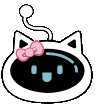

✦ Desktop Companion & Productivity OS "turns desk fatigue into mindful micro-breaks" 💧🐾Luna — The Desktop Hydration Companion
A charming desktop companion built to keep deep-focus workers hydrated. Cross-platform native Swift/SpriteKit & Electron/Canvas pet that physically sprints to the center of your screen when it’s time to hydrate.
The Challenge
Working long hours at a computer often means forgetting to drink water. Sterile system popups get swiped away, while intrusive alerts disrupt intense creative flow.
“Sterile system popups fail because they don’t command real emotional presence. We needed a gentle, living physical cue.”
The Solution
Built Luna—a lightweight, cross-platform desktop pet for Windows and macOS that roams seamlessly across multiple displays and sprints to the screen center when it’s time to hydrate.
Physical Center-Screen Sprint
Instead of ignorable toasts, Luna physically gallops to display center with actionable hydration reminders and stays until acknowledged.
Per-Pixel Click-Through Transparency
Transparent pixel regions pass mouse clicks directly to your underlying code editors and design tools, with zero click dead-zones.
Multi-Monitor Pathfinding
Custom ScreenNavigator tracks multi-display virtual topology, bridging disparate resolutions, refresh rates, and DPI scales.
Procedural Vector Animation
38+ frames across 14 emotional states generated dynamically via vector math from a single base SVG with zero bulky sprite sheets.
Hydration Compliance
Physical screen center sprint eliminates popup blindness across 8-hour sprint sessions.
Runtime RAM Footprint
Procedural vector math keeps the executable tiny and instant without shipping video assets.
Virtual Topology
Seamlessly traverses across dual 4K + ultrawide layouts with automatic display edge docking.
Zero Telemetry
Zero network requests, zero background tracking, and intentionally silent for office focus.